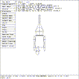
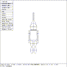

 Figure (wm-leg1): The First Leg
The ellipsoid primitive (e.6) is used as a prototype to build the upper and lower parts of both legs from. The primitive e.6 is scaled, rotated, and translated into position as the upper left leg, as seen in Figure (wm-leg1) . Then, copies are made and translated to the remaining positions, just like the arms were.
mged> sed e.6
Select ``Rotate'' in the Solid Edit menu
mged> p 0 45 90
Select ``Translate'' in the Solid Edit menu
mged> p -0.5 -3 0
Select ``ACCEPT Edit'' in the Button menu - This is the upper left leg
mged> cp e.6 e.7
mged> cp e.6 e.8
mged> cp e.6 e.9
mged> sed e.7
Select ``Translate'' in the Solid Edit menu
mged> p -0.5 -5 0
Select ``ACCEPT Edit'' in the Button menu - This is the lower left leg
mged> sed e.8
Select ``Translate'' in the Solid Edit menu
mged> p 0.5 -3 0
Select ``ACCEPT Edit'' in the Button menu - This is the upper right leg
mged> sed e.9
Select ``Translate'' in the Solid Edit menu
mged> p 0.5 -5 0
Select ``ACCEPT Edit'' in the Button menu - This is the lower right leg
 Figure (wm-final1): The Tin Woodsman
Figure (wm-final1) is the view on the screen, the Tin Woodsman. Take a moment to use the rotation knobs to view the model from various angles.
{kind=link}
{kind=link}